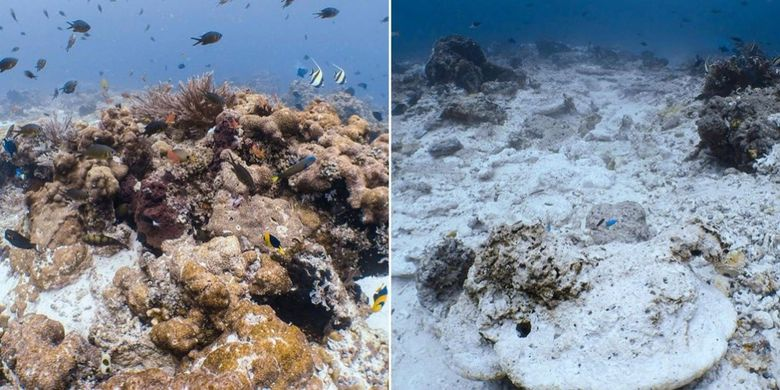

Terganggunya Ekosistem
Ekosistem mengalami perubahan sepanjang waktu. Keseimbangan ekosistem tidaklah statis, artinya komponen penyusun ekosistem dapat mengalami kenaikan maupun penurunan jumlah populasi, namun dalam komposisi yang proporsional. Apa sajakah yang menyebabkan perubahan ekosistem? Perubahan lingkungan dapat terjadi karena dua faktor yaitu perubahan ekosistem secara alamiah dan perubahan ekosistem yang diakibatkan oleh kegiatan manusia. Contohnya seperti letusan gunung berapi (Gunung St. Helens atau Krakatau), kebakaran hutan (Yellowstone, AS barat), kontaminasi nuklir (Chernobyl, Three Mile Island), deforestasi (hutan hujan Amazon), dan angin topan (Katrina, Mitch). mungkin juga menyebutkan bahwa ekosistem berubah secara bertahap ketika spesies yang berbeda berkembang dan yang lain menurun karena berbagai faktor.
Evolusi Terumbu Karang
Menurut Darwin, evolusi terumbu karang disebabkan oleh gerakan tektonik dari bumi. Dia mengusulkan bahwa evolusi terumbu karang terjadi dari fringing reefs lalu barrier reefs dan akhirnya karang atol yang terbentuk karena rangkaian evolusi. Seperti pada pulau volkanik yang lambat laun tenggelam karena gerakan tektonik pulau tersebut dan pada saat yang sama fringing reefs tumbuh di tepi pantai pulau. Karena proses tektonik yang terus berlajut yang menyebabkan pulau terus tenggelam dan posisi karang terus tumbuh walau substrat tempat dia tumbuh terus tenggelam sehingga membentuk suatu barrier reefs. Ketika pulau seluruhnya tenggelam, posisi barier reefs tetap sama (tepi pantai), karena pulaunya tenggelam bagian tengah menjadi terisis air laut dan membentuk lagoon dengan karang atolls disekitarnya.
Menurut Daly , evolusi pada terumbu karang terjadi karena perubahan ketinggian permukaan air laut yang disebabkan oleh pergerakan bumi yang semakin dekat dengan matahari dan iklim yang menghangat. Proses evolusi yang terjadi yaitu mulai dari terumbu karang tepi, karena permukaan air yang meningkat dan karang yang terus berusaha tumbuh pada kedalaman yang optimum bagi pertumbuhannya maka karang tersebut terus tumbuh sehingga tetap pada kedalaman yang optimum lalu membentuk barrier reeefs. Namun ketika permukaan air laut yang terus meningkat hingga menenggelamkan pulau tempat terumbu karang berada dan pertumbuhan karang yang terus terjadi maka terumbu karang tersebut akan menjadi terumbu karang atol.
Suksesi Terumbu Karang
Suksesi yaitu proses perubahan yang terjadi dalam komunitas atau ekosistem yang menyebabkan timbulnya penggantian dari satu komunitas atau ekosistem oleh komunitas atau ekosistem yang lain (Kendeigh, 1980).
Suksesi ekologi adalah istilah yang digunakan untuk menggambarkan apa yang terjadi pada komunitas ekologi dari waktu ke waktu. Hal ini mengacu pada serangkaian perubahan lebih atau kurang dapat diprediksi dan teratur yang terjadi dalam komposisi atau struktur komunitas ekologi. Contohnya terumbu karang. Terumbu karang sebagai ekosistem tidak hanya muncul, tetapi seperti komunitas tumbuhan harus dibentuk dari waktu ke waktu melalui suksesi ekologis. Suksesi ekologis utama dalam terumbu karang adalah penjajahan bebatuan oleh polip karang kecil. Polip-polip ini akan tumbuh dan membelah menjadi banyak untuk menciptakan koloni karang. Bentuk dan naungan koloni karang akhirnya menarik ikan kecil dan krustasea yang hidup di sekitar karang. Ikan yang lebih kecil adalah makanan untuk ikan yang lebih besar, dan akhirnya ada terumbu karang yang berfungsi penuh. Prinsip-prinsip suksesi ekologis, sementara dikembangkan dalam konteks untuk tumbuhan, ada di semua ekosistem yang ditetapkan.
Suksesi Primer
Contoh yang terdapat di Indonesia adalah terbentuknya suksesi di Gunung Krakatau yang pernah meletus pada tahun 1883. Di daerah bekas letusan gunung Krakatau mula-mula muncul pioner berupa lumut kerak (liken) serta tumbuhan lumut yang tahan terhadap penyinaran matahari dan kekeringan. Tumbuhan perintis itu mulai mengadakan pelapukan pada daerah permukaan lahan, sehingga terbentuk tanah sederhana. Bila tumbuhan perintis mati maka akan mengundang datangnya pengurai. Zat yang terbentuk karma aktivitas penguraian bercampur dengan hasil pelapukan lahan membentuk tanah yang lebih kompleks susunannya. Dengan adanya tanah ini, biji yang datang dari luar daerah dapat tumbuh dengan subur. Kemudian rumput yang tahan kekeringan tumbuh. Bersamaan dengan itu tumbuhan herba pun tumbuh menggatikan tanaman pioner dengan menaunginya. Kondisi demikian tidak menjadikan pioner subur tapi sebaliknya. Sementara itu, rumput dan belukar dengan akarnya yang kuat terns mengadakan pelapukan lahan.Bagian tumbuhan yang mati diuraikan oleh jamur sehingga keadaan tanah menjadi lebih tebal. Kemudian semak tumbuh. Tumbuhan semak menaungi rumput dan belukar maka terjadilah kompetisi. Lama kelamaan semak menjadi dominan kemudian pohon mendesak tumbuhan belukar sehingga terbentuklah hutan. Saat itulah ekosistem disebut mencapai kesetimbangan atau dikatakan ekosistem mencapai klimaks, yakni perubahan yang terjadi sangat kecil sehingga tidak banyak mengubah ekosistem itu.
Suksesi Sekunder
- Sebagai pemukiman. Berkurangnya lahan untuk dijadikan tempat tinggal karena pertumubuhan penduduk yang semakin tidak terkendali, menjadi salah satu alasan kenapa hutan-hutan ditebang dan dibuka. Beberapa hutan ditebang untuk dijadikan perumahan penduduk.
- Sebagai bahan bangunan maupun perabotan rumah tangga. Beberapa bahan bangunan dan perabotan rumah tangga dibuat dari kayu-kayu berkualitas tinggi yang hanya ada di dalam hutan, seperti kayu jati, cendana, dan mahoni. Kayu-kayu tersebut sudah terbukti kualitasnya untuk dijadikan bahan bangunan maupun perabotan rumah tangga. Namun sayangnya kegiatan penebangan guna mencari keuntungan ini tidak diikuti dengan kegiatan pelestarian beberapa jenis pohon tersebut.
- Sebagai lahan komersial. Penebangan hutan juga dilakukan sebagai upaya untuk menciptakan lahan yang nantinya akan dipergunakan sebagai lahan pertanian, perkebunan, dan peternakan. Tidak jarang pula beberapa hutan ditebang untuk dijadikan jalan raya karena posisinya yang strategis.
Tahap-Tahap Suksesi
Secara umum, tahap-tahap terjadinya suksesi adalah sebagai berikut: Lahan kosong menjadi invasi benih lalu mengalami kolonisasi terjadi kompetisi kemudian ada interaksi antar komunitas dan lingkungan selanjutnya tercapai stabilisasi dan tercapainya keseimbangan yang mantap.
- Fase Permulaan
Setelah penggundulan hutan, dengan sendirinya hampir tidak ada biomasa yang tersisa yang mampu beregenerasi. Tetapi, tumbuhan herba dan semak-semak muncul dengan cepat dan menempati tanah yang gundul. - Fase Awal/ Muda
kurang dari satu tahun, tumbuhan herba dan semak-semak digantikan oleh jenis-jenis pohon pionir awal yang mempunyai ciri-ciri sebagai berikut: pertumbuhan tinggi yang cepat, kerapatan kayu yang rendah, pertumbuhan cabang sedikit, daun-daun berukuran besar yang sederhana, relatif muda/cepat mulai berbunga, memproduksi banyak benih-benih dorman ukuran kecil yang disebarkan oleh burung-burung, tikus atau angin, masa hidup yang pendek (7- 25 tahun), berkecambah pada intensitas cahaya tinggi, dan daerah penyebaran yang luas. Kebutuhan cahaya yang tinggi menyebabkan bahwa tingkat kematian pohon-pohon pionir awal pada fase ini sangat tinggi, dan pohon-pohon tumbuh dengan umur yang kurang lebih sama. Walaupun tegakan yang tumbuh didominasi oleh jenis-jenis pionir, namun pada tegakan tersebut juga dijumpai beberapa jenis pohon dari fase yang berikutnya, yang akan tetapi segera digantikan/ditutupi oleh pionir-pionir awal yang cepat tumbuh.
Selain Itu, Ada Juga Faktor Pembatas. Apa Itu Faktor Pembatas?
Faktor pembatas merupakan hal-hal yang dapat mempengaruhi jumlah dan perkembangan suatu ekosistem. Setiap makhluk hidup memiliki bahan-bahan yang penting bagi kelangsungan hidupnya, apabila bahan-bahan ini tersedia dalam jumlah yang minimum, maka akan bertindak sebagai faktor pembatas begitu pula bila tersedia dalam jumlah yang terlalu banyak, segala sesuatu yang berlebihan itu tidak baik. Hal-hal seperti ini meyebabkan adanya batas minimum-maksimum sebagai kisaran toleransi suatu organisme. Contohnya : Terumbu karang dapat hidup dengan toleransi suhu berkisar 20-30oC.
Cahaya, temperatur dan air secara ekologis merupakan faktor lingkungan yang penting untuk daratan, sedangkan cahaya, temperatur dan kadar garam merupakan faktor lingkungan yang penting untuk lautan.
Suksesi Koral Menurut Para Ilmuan
Bagaimana para ilmuwan menggambarkan tahap awal suksesi terumbu karang? Menurut Anda tahap apa yang mungkin terjadi selanjutnya? Jawabannya bahwa para ilmuwan menyatakan bahwa substrat keras atau berbatu yang bebas dari ganggang diperlukan agar rekrutan karang kecil, atau polip, dapat menempel dan mulai berkembang biak menjadi koloni karang. Koloni karang kemudian akan menyediakan makanan, ruang, dan tempat berlindung bagi makhluk karang lainnya, termasuk herbivora. Kemudian, ikan karnivora dan invertebrata akan berkembang biak dan memakan herbivora. Ketika keanekaragaman hayati meningkat, ceruk-ceruk tambahan akan berkembang. Dan dalam kasus Kepulauan Garis yang lebih murni, karang mendukung lebih banyak predator daripada herbivora dan menunjukkan tanda-tanda stabilitas dan ketahanan.
Beberapa Riset Dan Inovasi Yang Dapat Diinisiasi Untuk Mendukung Program Rehabilitasi
- Pergeseran komunitas terumbu karang
- Perbaikan komunitas terumbu karang dari fenomena pemutihan massal, spesies invasive, dan penyakit karang lainnya
- Persediaan bibit transplan berdasarkan analisis konektivitas, resiliensi dan keragaman genetika Terumbu Karang untuk restorasi
- Interaksi antara koral, alga dan mikroba, serta implikasinya untuk ekologi dan bahan obat
- Makroekologi, fungsi ekosistem dan biogeografi
- Pembuatan pelayanan pemetaan ilmiah biodiversitas dan rehabilitasi/restorasi berbasis website
Sebagai contoh, ekosistem terumbu karang di Kepulauan Seribu yang terletak di utara Jakarta, merupakan lokasi yang sangat cocok untuk mempelajari tentang pengaruh alami dan antropogenik, dan bagaimana memberikan pemilihan terhadap teknik rehabilitasi yang sesuai. Teknik restorasi atau rehabilitasi (Misalnya: Ecoreef, Reefball, Rockfile, Artificial Reef, dan Transplantasi karang) sudah banyak dikembangkan di Indonesia.
Bongkahan es raksasa seluas 6.000 kilometer persegi atau setara luasnya Pulau Bali, runtuh, terlepas dari daratan utama Antartika (Kutub Selatan). Ini merupakan iceberg paling besar yang tercatat dalam sejarah, beratnya diperkirakan...Lanjut Baca
“Kedua tim telah sepakat bahwa luas terumbu karang yang rusak sebesar 18.882 m2, dan kesepakatan tersebut telah ditandatangani kedua belah pihak di atas kertas bermaterai,” jelas Deputi...Lanjut Baca
Direktorat Jenderal Penegakan Hukum LHK (Ditjen Gakkum), Rasio Ridho Sani menyatakan, dua kapal asing berbendera Bahama dan Belgia, MV Lyric Poet dan MT Alex, telah membayar ganti rugi senilai total lebih dari 2,5 juta dolar AS atau senilai R. 35,4 miliar kepada negara melalui Kementerian Lingkungan...Lanjut Baca
Bahkan, tahun ini KKP mulai memfokuskan programnya untuk membenahi Pantura Jawa. "Kami prihatin dengan kondisi Pantura Jawa ini. Kerusakannya cukup tinggi," kata Dirjen Perikanan Tangkap...Lanjut Baca
"mangrove yang kita punya terbesar di dunia, tapi kerusakannya juga paling besar. Sebagai Negara kepulauan, pemerintah belum mengintegrasikan visi keselamatan masyarakat yang hidup di pesisir dalam konteks perubahan iklim"...Lanjut Baca
Letusan dahsyat Gunung Krakatau pada 1883 telah melenyapkan segala kehidupan di atasnya. Kini, sebagian pulau di bekas Gunung Krakatau telah ditumbuhi tumbuhan. Kondisi itu menjadikan Kepulauan Krakatau sebagai satu-satunya laboratorium alam pembentukan hutan tropik tanpa campur tangan manusia....Lanjut Baca